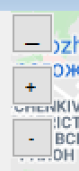

Крок 3. Відображення областей на карті
Експерт переходить на вкладку «Фільтрація», натискаючи на неї лівою кнопкою миші. На цій вкладці експерт може відобразити маркери, області та трубопроводи, які належать або відносяться до певної задачі, середовища чи виду економічної діяльності.
Експерт у вкладці «Фільтрація» натискає на пусту клітинку у полі «Області», тоді на карті з’являться всі області крім Херсонської та Одеської.

Важливо! Кнопки керування на карті
На карті є три кнопки:
« _ » Приховує бокову панель управління
« + » Збільшує приближення на мапі
« – » Зменшує приближення на мапі